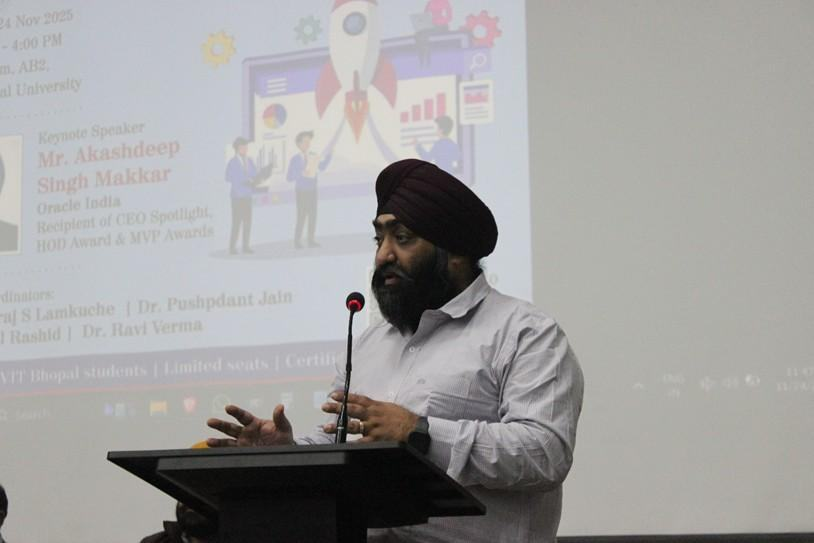
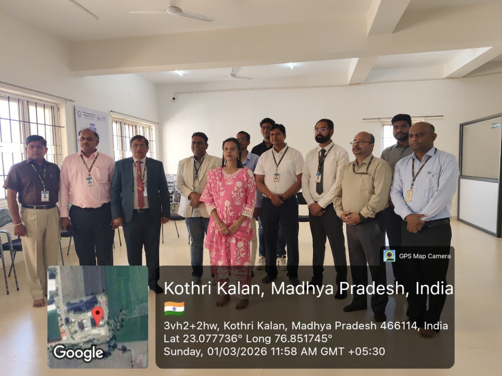
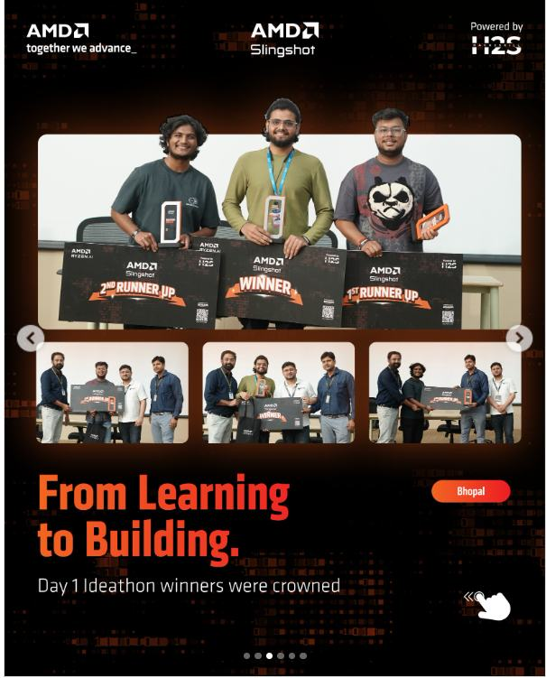
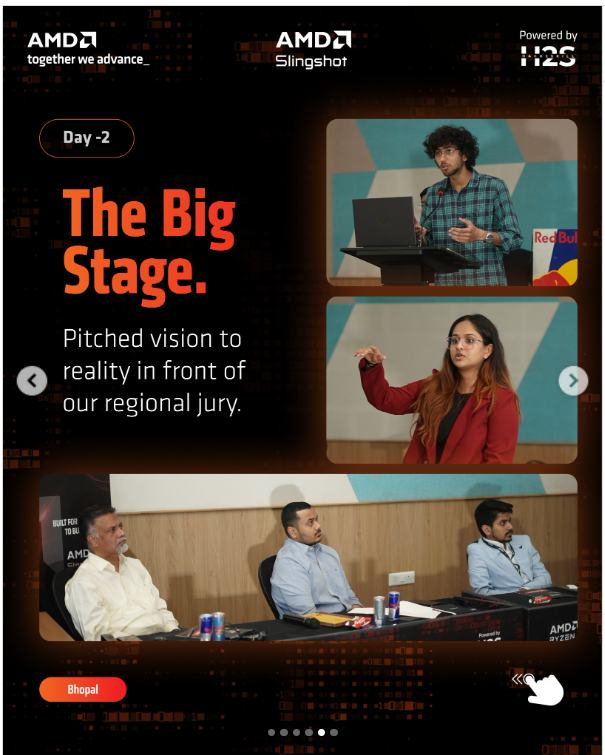
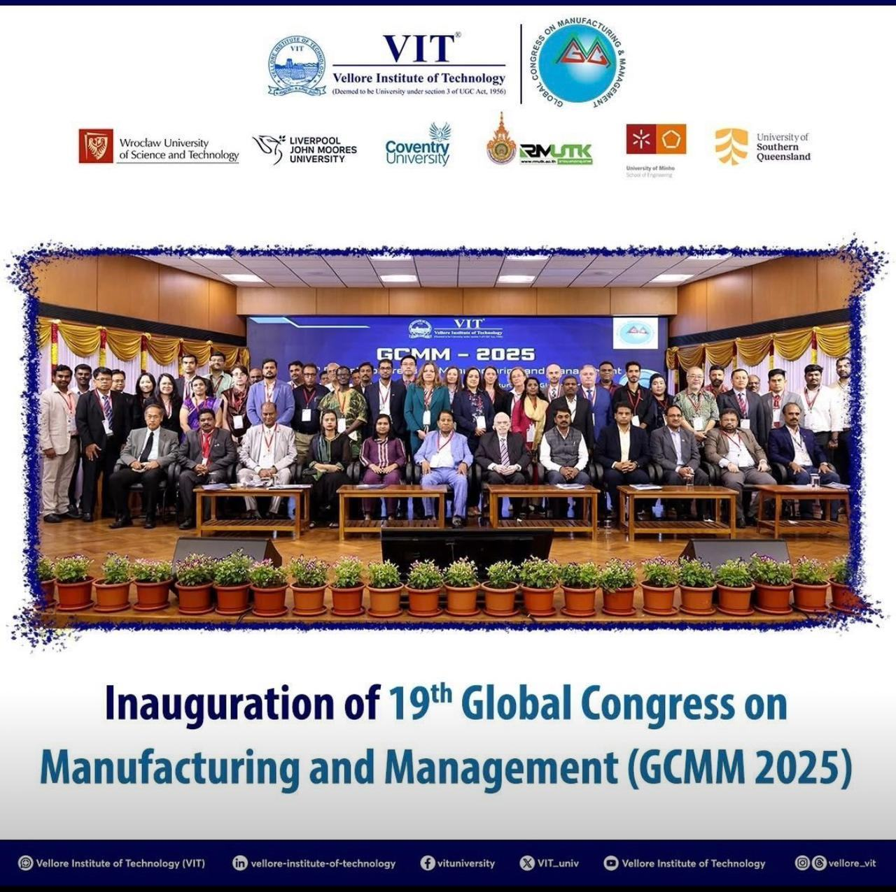
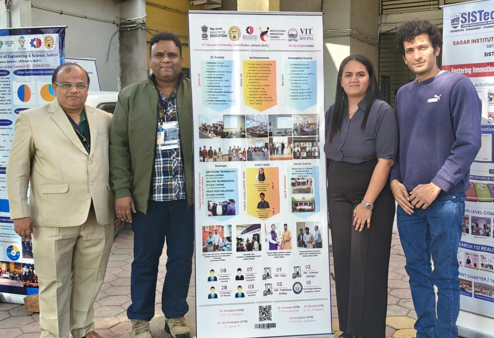
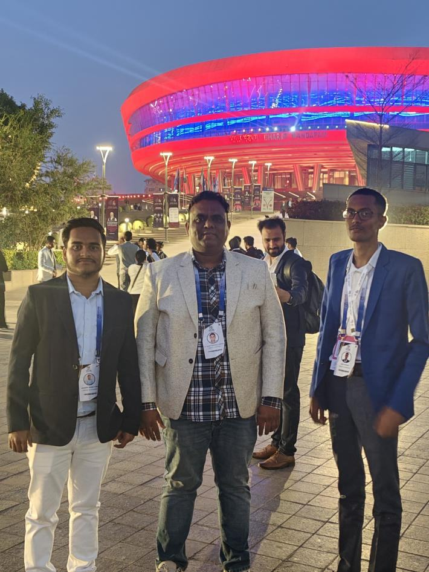
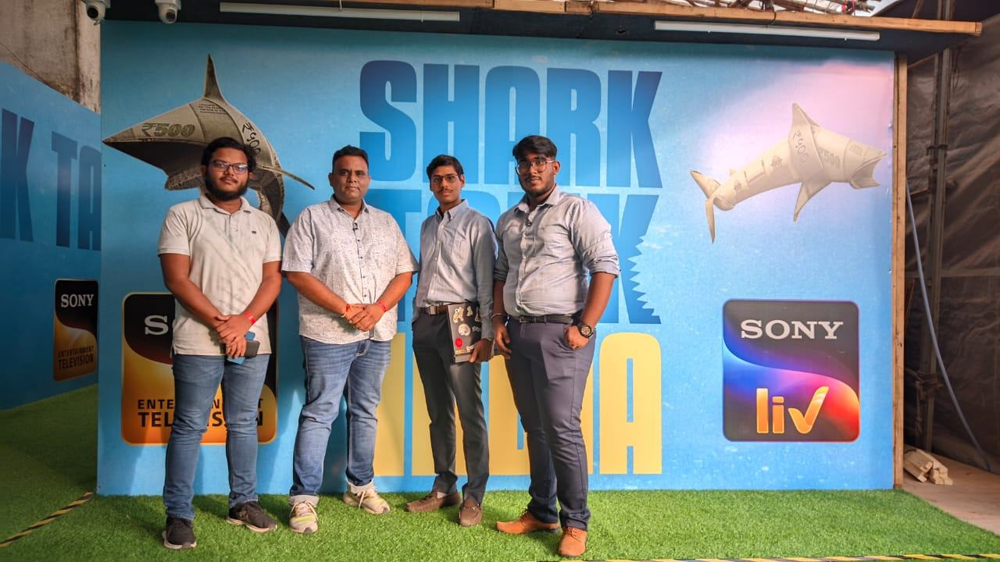
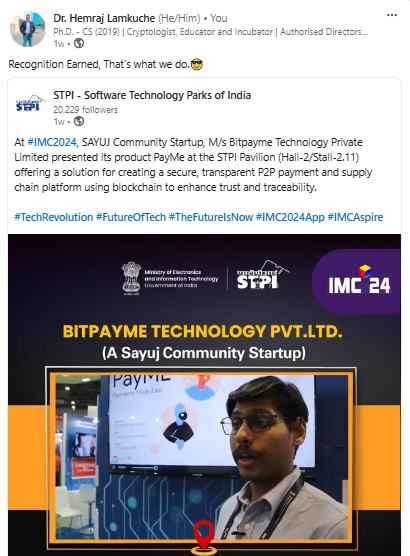

Internal Presentation Briefing · August 2026
VIT Bhopal University
Agenda
The roadmap to a fully accredited TBI.
State and district funding for students and faculty.
How the TBI office grows its own capital.
The compliance triggered the day approval lands.
Central government funds, and what benchmark states do.
Tapping India's ₹29,000 Cr CSR pool.
Before the plan itself, five slides record what the office has already delivered between 2024 and April 2026.
The opportunity
These schemes are non-exclusive. Central, state and CSR funding can be drawn at the same time — the four pools above stack rather than compete. Source: Government of India · NITI Aayog
Track record · 2024–26
Run through the Institution’s Innovation Council, IIC ID IC202431685 — 8 faculty and 7 student Innovation Ambassadors, 28 members and 3 external members.
Track record · Milestones
24 Nov 2025
Entrepreneurship and innovation as career paths, with a keynote from Oracle India.
02 Dec 2025
YUKTI innovations and startups shown at the Madhya Pradesh nodal centre, Indore.
10–12 Dec 2025
TBI took part in the 19th Global Congress on Manufacturing and Management.
16–20 Feb 2026
An incubated startup exhibited at Bharat Mandapam, New Delhi.
01 Mar 2026
Inaugurated at AB1 – 425 by the Honourable Trustee.
10–11 Apr 2026
220+ students, and Central India’s first fully AMD-sponsored ideathon.
Track record · On campus

24 Nov 2025
A TBI and IIC workshop in Auditorium 1, Academic Block 2, with a keynote by Akashdeep Singh Makkar of Oracle India.

01 Mar 2026
Opened at AB1 – 425 by Honourable Trustee Mrs. Ramani Balasundaram, with the Pro-VC, DFA, Executive Dean, Director Proctor and the TBI team.

10 Apr 2026 · Day 1
Teams built AI applications on AMD hardware. Day-one ideathon winners were crowned.

11 Apr 2026 · Day 2
Shortlisted teams took their prototypes to a regional jury.
VIT Bhopal is AMD’s official ideathon partner for Central India. The Slingshot Ideathon ran with AMD India and Amazon India in Auditorium 1, Academic Block 2.
Track record · Beyond campus

10–12 Dec 2025 · VIT Vellore
The 19th Global Congress on Manufacturing and Management — a biennial forum whose membership spans 22 countries and which draws delegates from more than 25.

02 Dec 2025 · Indore
AICTE and the Ministry of Education’s regional meet at the Madhya Pradesh nodal centre. TBI and IIC showed YUKTI innovations, startups and the Swadesh Udyami Bazaar.

16–20 Feb 2026 · New Delhi
The first global AI summit hosted in the Global South. Incubated startup Inflynx Technologies exhibited at Bharat Mandapam, Hall 14, Pod 14P05 — featured publicly by STPI.
Track record · Student ventures
Registered with the Ministry of Corporate Affairs
Incorporated 20 Mar 2025
CIN U66190HR2025PTC129815
Incorporated 18 Mar 2025
CIN U63999OD2025PTC047988
Incorporated 05 Feb 2025 · DPIIT DIPP191201
CIN U62013MP2024PTC072489
YUKTI Challenge 2025 · technology readiness
TRL 7
An intelligent supply-chain management agent. Riya Bedwal.
TRL 5
A universal food-waste reduction system. Kushagra Pant.


Section 1 · Roadmap
Q1–Q2
Core team hired, 10,000 sq. ft. allocated, IIC upgraded, five-year business plan signed off.
Q3
Section-8 registration, then 12A, 80G, CSR-1 and GeM in sequence.
Q3–Q4
DST-NIDHI, AIC, TIDE 2.0 and the MP Startup Policy filed together.
Q4
Pilot cohort seated, Innovation Challenge run, first five startups incubated.
Legal registration gates everything downstream — no grant application is admissible until the Section-8 entity exists. Source: Government of India · NITI Aayog
Section 1 · Roadmap
Year 2
Year 3
Section 2 · State funding
Section 2 · District facilitation
Sehore DIC
Section 3 · Funding strategy
The wider the base, the steadier the office. Grant capital is the largest layer but the slowest and least certain; earned revenue is the smallest but the only layer the TBI controls outright.
Section 4 · Compliance
01
Not-for-profit entity registration.
02
Tax exemption, plus the deduction donors need.
03
Legal eligibility to receive CSR funds.
04
The mandatory public procurement portal.
05
Sign-off from the DST expert committee.
06
Utilisation certificates and SE reports, every year.
Steps 1 to 4 are one-time and sequential. Steps 5 and 6 recur for as long as the TBI holds a central grant.
Section 5 · National schemes
Builds and runs the TBI itself.
Backs a cohort or a technology vertical.
Reaches individuals directly.
Each tier has a different applicant. The TBI applies for the first, nominates startups for the second, and refers founders into the third.
Section 5 · Cross-state benchmark
Per-startup grants and fund corpora are different instruments — the two groups above are not directly comparable. What matters for us: SISFS lets one startup apply to three incubators anywhere in India, so VIT Bhopal's TBI can recruit founders well beyond Madhya Pradesh.
Section 6 · Corporate funding
Where we go first
The flagship event · Startup Expo 2026–27
The VIT Bhopal startup confluence
All five incubated startups pitch live to investors, corporates and mentors.
Industry and public walk through working prototypes — product, not slides.
A special episode of the podcast, recorded in front of a real audience.
Year-1 founders and mentors recognised formally, on stage.
Timed to ride the momentum of the MP Global Investors Summit earlier that year. Every SANGAM compounds — the press, the case studies and the investor introductions are what recruit the next cohort.
Next steps
At least 10,000 sq. ft. of built-up area allocated to the TBI.
Sanction for a CEO and a lean operations team.
Approval to register the Section-8 TBI entity.
Internal funding to run the Year-1 pilot cohort.
Every external scheme in this deck depends on these four. None can be applied for until the space, the team and the entity exist on paper.
The centre
Thank you
VIT Bhopal's Technology Business Incubator starts with Year 1.
01 / 15
Press Esc to close